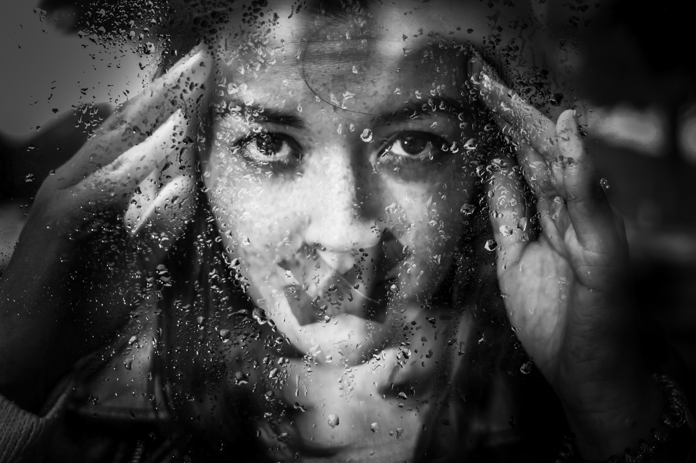
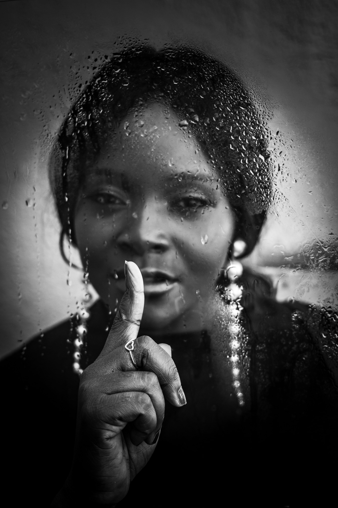
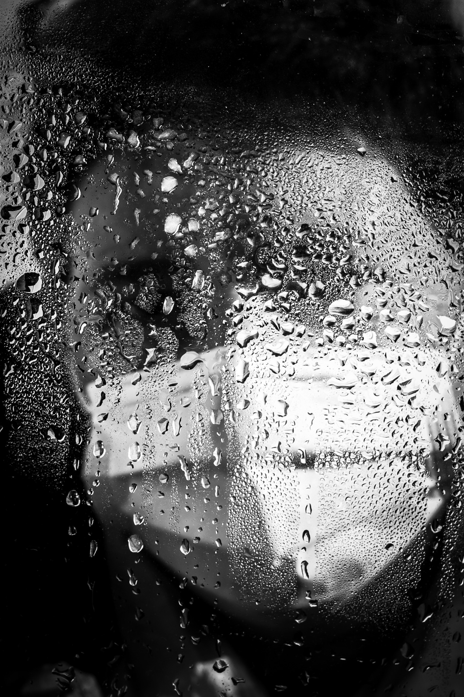
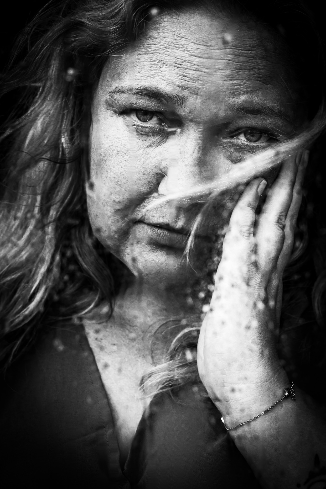
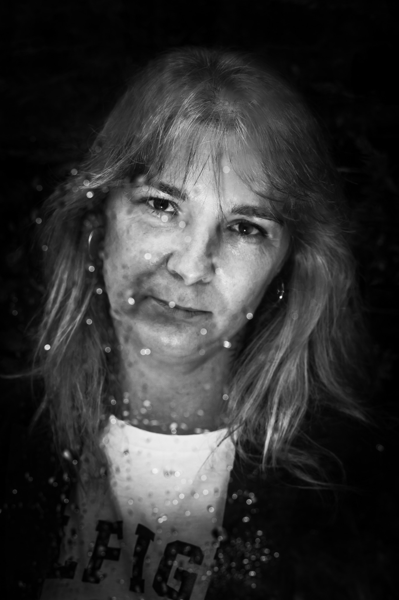
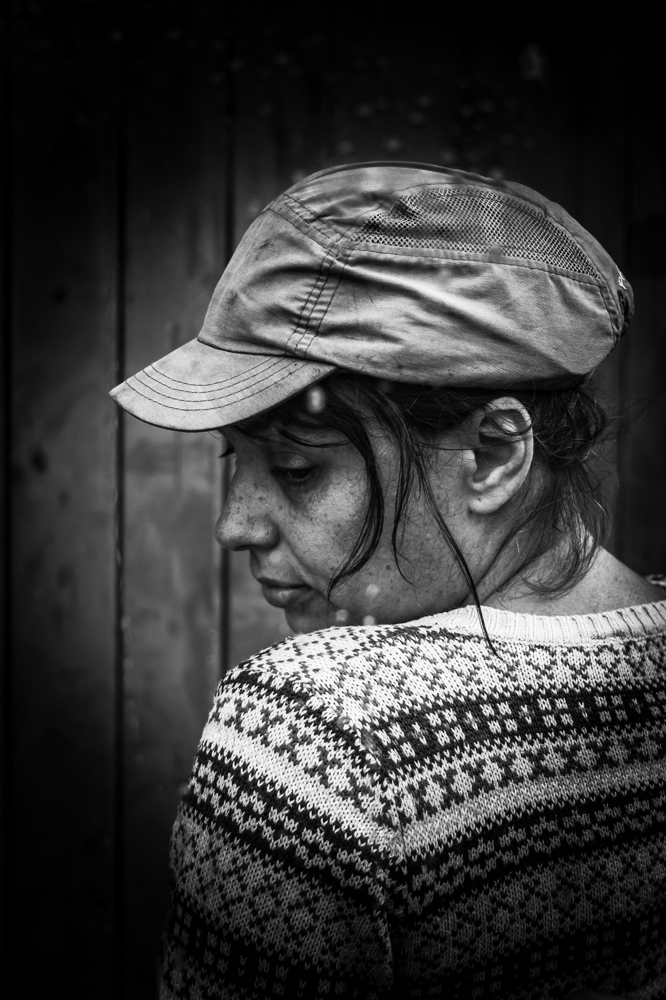

La démarche
Voir ce qui reste caché.
« Derrière la vitre » est une exposition photographique qui invite à regarder au-delà des apparences. Une vitre peut protéger, séparer, déformer ou enfermer. Elle devient ici la frontière symbolique entre ce qui est montré et ce qui est vécu.
À travers les visages, les mains, les regards et les traces laissées sur la vitre, cette série évoque avec pudeur les violences intrafamiliales et le harcèlement scolaire. Elle ne cherche pas à tout montrer. Elle cherche à faire ressentir, à ouvrir le dialogue et à rappeler qu’une parole entendue peut être un premier passage vers l’aide.
« Derrière une apparence ordinaire peut se cacher une histoire que personne n’entend. »
MOMMERSPHOTOGRAPHY — Derrière la vitre, 2026

Antoine de Saint-Exupéry

MOMMERSPHOTOGRAPHY — Derrière la vitre, 2026


Albert Camus


Victor Hugo
Pourquoi cette exposition ?
Briser le silence.
Parce que la violence et le harcèlement peuvent rester invisibles. Parce qu’une victime peut sourire, aller à l’école, travailler, croiser notre regard — tout en vivant quelque chose que nous ne voyons pas.
Cette exposition veut créer un espace où l’on peut regarder sans juger, ressentir sans détourner les yeux et, surtout, comprendre qu’il est possible d’en parler.
Voir. Écouter. Croire. Aider.
L’auteur
MOMMERSPHOTOGRAPHY
Une démarche photographique centrée sur l’humain, le regard et ce que l’image peut révéler lorsque les mots sont difficiles à trouver.
© MOMMERSPHOTOGRAPHY 2026 — Exposition « Derrière la vitre ».
MOMMERS Guillaume — Photographe & auteur de cette exposition
Restons en contact
Suivre MOMMERSPHOTOGRAPHY
Vous souhaitez accueillir l’exposition « Derrière la vitre », échanger autour du projet ou suivre mon travail photographique ? Retrouvez-moi sur les réseaux sociaux.
Instagram · @mommersphotography_officiel Facebook · MOMMERSPHOTOGRAPHY
Besoin d’aide ?
Ne restez pas seul.
En France, des services gratuits peuvent écouter, informer et orienter.
Police / gendarmerie ou numéro d’urgence européen.
Notamment si vous ne pouvez pas parler à voix haute.
Pour un enfant en danger ou en risque de l’être.
Pour les jeunes victimes de harcèlement et de violences numériques.
Écoute, information et orientation.
Écoute et orientation des victimes d’infractions.